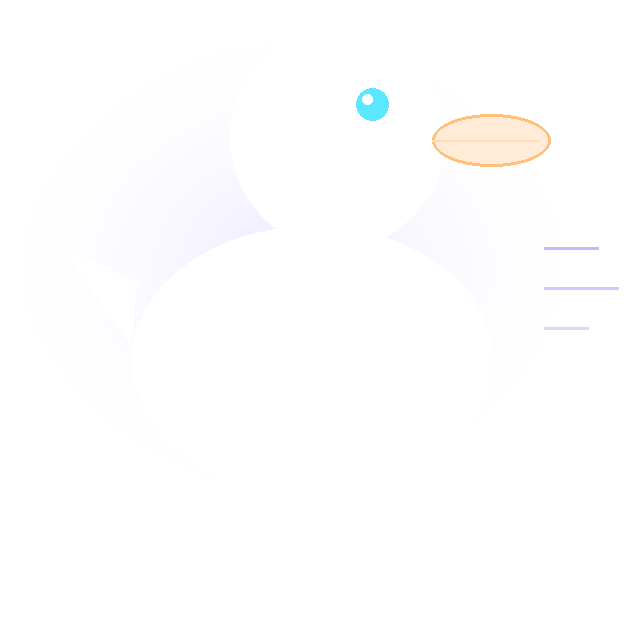

联合品牌
用我们已验证的标品做你的名字，共担模具与认证成本。6–8 周上架，不用先建研发团队。
这是枢元智联存在的全部理由。也是我们为什么把公司，押在一颗几块钱的芯片上。
↓ 往下读，大约 4 分钟
2023 年，一家中国团队把一张信用卡大小的录音卡贴在手机背面。没有屏幕，没有按键，只做一件事：把对话变成可以检索的文字。
它没有和手机比录音质量，而是绕开手机——因为“通话录音 + 自动整理”这个动作，手机自己做不好。
今天，这家公司估值 20 亿美元。
用户买的从来不是模型，
是“开完会不用再写”。

柏林 GTC。黄仁勋带着四只小机器鸭走上台，指挥它们打盹、翻跟头，把主题定为“新工业革命的开端”。
那是英伟达与 Pollen Robotics、Hugging Face 合作的 Microduck：云端训练、PC 上评估、再部署到机器人身上。
全场都在笑。但真正的信息是：工具链正在向下沉，沉到小团队也用得起。
演示证明“可能”，不证明“可用”。
舞台离货架，还差最后一米。

如果只看发布会，物理 AI 的主角是英伟达。但看数量，主角是另一家公司：乐鑫——Wi-Fi MCU 出货量全球第一，ESP32 系列累计出货以亿计。
一颗能联网、能推理的模组，价格已经低于 10 元。这意味着一个漏水哨兵、一双鞋垫、一个门磁，都装得起“大脑”。
生态也早已是公共品：ESP-IDF、Arduino、MicroPython、ESP-DL、Matter。一个应届生三天能点灯，三个月能出样机。
上限由英伟达决定，下限由 ESP32 决定。
而一个行业能不能普及，看的从来是下限。
不做最聪明的机器人，做最容易被用上的设备。
一年时间，我们把这件事拆成 12 个领域、72 个产品位：从墙上的开关，到脚下的鞋垫；从机房的异响，到蜂箱的分蜂。
每一个都有形态、传感器、BOM 区间、认证路径和上市节点。不是 PPT 创意，是可以下厂的东西。
物理 AI 需要一千个团队——分布在不同的行业、不同的城市、不同的场景里。 我们有平台、供应链和 72 个位子；你需要带来的，是场景、渠道和决心。
用我们已验证的标品做你的名字，共担模具与认证成本。6–8 周上架，不用先建研发团队。
你定义场景与客户，我们做整机：ID、硬件、固件、云、认证、量产全链路。
直接代理我们的自有品牌产品，含培训、样品、售后备件与市场物料。
60 分钟产品评审，不收费、不推销。我们会直接说：能不能做、大概多少钱、多久、风险在哪。
机器鸭会过时，
风口会换名字。
但“让设备长出感官和手脚”这件事，
会持续二十年。
我们想做的，是在这二十年里，
当那个把演示变成商品的人。
如果这一页让你想起了某个人——把链接转给他。